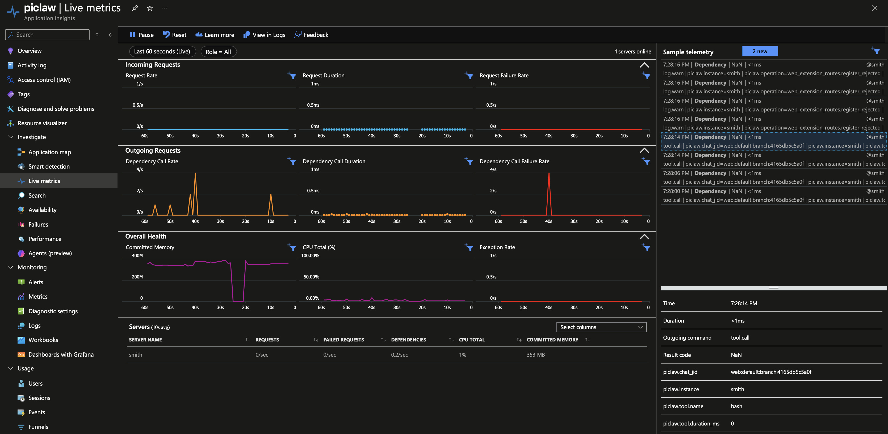
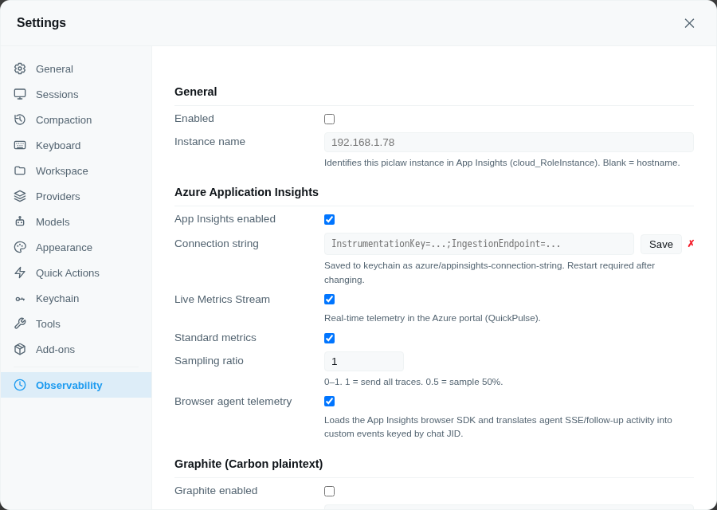

observability
extension
OpenTelemetry observability — trace errors and agent turns across piclaw instances to Azure Application Insights (with Live Metrics) and local Graphite
OpenTelemetry observability for piclaw — trace errors and agent turns across multiple instances to Azure Application Insights (with Live Metrics Stream) and local Graphite.

Uses the runtime's structured log-sink contract. The runtime never imports OTel — it just logs structured records. This addon subscribes to those records and creates OTel spans, exceptions, and Graphite metrics from them.
Open Settings → Add-Ons and install observability from the catalog.
The pane loads/saves non-secret settings through the direct backend add-on config API (/agent/addons/api/observability/config). The connection string can be pasted directly into the settings pane — it is saved to the keychain automatically as azure/appinsights-connection-string. A restart is needed after setting or changing the connection string.

| Field | Type | Default | Description |
|---|---|---|---|
| Enabled | checkbox | off | Master switch |
| Instance name | text | hostname() |
Identifies this instance in App Insights (cloud_RoleInstance). Set to e.g. smith, relay, orangepi. |
| App Insights enabled | checkbox | on | Sub-toggle for the Azure backend |
| Connection string | password | — | Paste the App Insights connection string directly. Saved to keychain as azure/appinsights-connection-string. |
| Live Metrics Stream | checkbox | on | Real-time telemetry in the Azure portal (QuickPulse) |
| Standard metrics | checkbox | on | OTel standard metrics collection (CPU, memory, request rate) |
| Sampling ratio | number | 1 | 0–1. 1 = send all traces. 0.5 = sample 50%. |
| Graphite enabled | checkbox | off | Sub-toggle for Carbon plaintext push |
| Host | text | — | Graphite/Carbon receiver host, e.g. 192.168.1.250 |
| Port | number | 2003 | Carbon plaintext port |
| Metric prefix | text | piclaw |
Root prefix for all Graphite metric paths |
| What | Where |
|---|---|
| App Insights connection string | Keychain — entry azure/appinsights-connection-string. Entered directly in the settings pane. |
| All other settings | Runtime database — extension KV store (SQLite, global scope, extension ID observability) |
| App Insights actor/session identity | Derived on the backend from Piclaw log records (chatJid, sessionLeafId, turnId) |
No config files are written to disk.
Each piclaw instance needs:
instance_name set to a unique value in Settings → ObservabilityThe addon uses piclaw's log-sink contract — a generic API that any addon can use. Server-side spans are derived from runtime records. The add-on does not install browser telemetry, wrap fetch, wrap EventSource, or load the browser Application Insights SDK.
Server side:
runtime addon
─────── ─────
log.info("Prompting session", {
operation: "run_agent.prompt", ──► sink receives record
chatJid: "web:default", creates Span "agent.turn"
model: "azure-openai/gpt-5-4", stores in inflightTurns map
})
... model runs, tools fire ...
log.info("Tool execution ended", {
operation: "tool.call.end", ──► sink receives record
chatJid: "web:default", creates child Span "tool.call"
toolName: "bash", pushes Graphite metric
durationMs: 320,
})
log.info("Agent run completed", {
operation: "run_agent.complete", ──► sink receives record
chatJid: "web:default", finds inflight span
durationMs: 4523, ends span → App Insights
}) pushes Graphite metricsIf the addon isn't installed, no sink is registered and there is zero overhead.
See the runtime observability docs for the full log-sink API and operation reference.
| OTel Resource attribute | App Insights field | Value |
|---|---|---|
service.name |
cloud_RoleName |
piclaw |
service.instance.id |
cloud_RoleInstance |
config instance_name (or hostname) |
host.name |
— | always OS hostname() |
deployment.environment |
custom dimension | auto-detected: docker / lxc / host-native |
service.version |
— | piclaw package version |
The goal is to make the standard Application Insights UX behave as if Piclaw were a normal web application, while still deriving all telemetry from backend runtime events.
| App Insights concept | Piclaw source | OTel/App Insights fields emitted |
|---|---|---|
| User | Chat/agent actor | enduser.id = chatJid, enduser.pseudo.id = chatJid, piclaw.chat_jid, piclaw.actor.id |
| Authenticated user | Same stable actor identity | Azure Monitor maps enduser.id to ai.user.authUserId; ai.user.authUserId is also kept as a custom dimension |
| User ID | Same stable actor identity | Azure Monitor maps enduser.pseudo.id to ai.user.id; ai.user.id is also kept as a custom dimension |
| Session | Piclaw runtime session/fork | session.id, ai.session.id, piclaw.session.id; value is sessionLeafId when available, otherwise chatJid |
| Operation / transaction | One agent turn | piclaw.turn_id; child model/tool spans share the same trace/operation |
| Request | User-visible agent turn | agent.turn SERVER span, request-style attributes (http.route=/agent/turn) |
| Dependency | Work performed by the turn | model.call, tool.call, provider.error CLIENT/dependency spans |
| Metrics | Spend and performance | token dimensions on model.call, duration/count metrics in Graphite, standard Azure Monitor metrics when enabled |
Azure Monitor's OpenTelemetry exporter maps:
| OTel attribute | App Insights field |
|---|---|
enduser.id |
ai.user.authUserId |
enduser.pseudo.id |
ai.user.id |
The exporter does not currently map session.id into the App Insights session tag for spans, so the add-on emits both standard (session.id) and App Insights-style (ai.session.id) attributes as queryable dimensions. This keeps the data available in Transaction Search/KQL and gives us a single place to add a custom exporter/processor later if needed.
Browser telemetry is intentionally absent. The web entry only registers the Settings pane. Front-end actions should be represented by backend log records and then mapped by this add-on into synthetic App Insights requests/events/spans. This keeps telemetry consistent across web, mobile, WhatsApp, scheduled tasks, and other channels.
| Log operation | OTel Span | Graphite metric |
|---|---|---|
run_agent.prompt → run_agent.complete |
agent.turn (request-style span; paired by turnId, fallback chatJid) |
agent.turn.count, agent.turn.duration_ms, agent.turn.success |
run_agent.prompt → run_agent (error) |
agent.turn (request-style span; ERROR + exception) |
agent.turn.count, agent.turn.error |
run_agent.no_terminal_reply |
agent.turn (request-style span; ERROR) |
agent.turn.error |
model.response.start/end |
model.call (dependency-style child span of agent.turn) |
model.call.count, model.call.duration_ms |
run_agent.attempt_failed |
provider.error (exception) |
recovery.attempts, provider.error.<classifier> |
tool.call.start/end |
tool.call (dependency-style child span of agent.turn) |
tool.<name>.count, tool.<name>.duration_ms |
dream.complete |
dream |
dream.duration_ms |
get_or_create.create_main_session |
— | session.created |
evict_idle.* |
— | session.evicted |
Any warn/error with operation |
log.warn / log.error |
— |
These interactions should be emitted by the backend as structured log records and then mapped here into App Insights request/event-style spans:
| Interaction | Backend source | Suggested App Insights item | Identity/session |
|---|---|---|---|
| User sends a message | handle_agent_message accepted payload |
agent.message.sent |
chatJid, sessionLeafId when known |
| Message queued as follow-up | queue/follow-up backend path | agent.followup.queued |
chatJid, active turnId when known |
| Queued follow-up consumed | follow-up materialization path | agent.followup.consumed |
chatJid, next turnId |
| Queued follow-up removed | queue remove backend handler | agent.followup.removed |
chatJid |
| Steering message queued | steer backend path | agent.steer.queued |
chatJid, active turnId when known |
| Model changed | backend model command path | agent.model.changed |
chatJid |
| UI command handled | backend command handlers | agent.ui.command |
chatJid |
{
"name": "agent.turn",
"kind": "SERVER",
"status": { "code": "OK" },
"duration": "4523ms",
"attributes": {
"piclaw.chat_jid": "web:default:branch:0f3858079ad7",
"piclaw.actor.kind": "chat_jid",
"piclaw.actor.id": "web:default:branch:0f3858079ad7",
"enduser.id": "web:default:branch:0f3858079ad7",
"enduser.pseudo.id": "web:default:branch:0f3858079ad7",
"session.id": "session-leaf-123",
"ai.session.id": "session-leaf-123",
"piclaw.instance": "smith",
"piclaw.model": "azure-openai/gpt-5-4",
"piclaw.turn.status": "success",
"piclaw.turn.duration_ms": 4523,
"piclaw.turn.output_chars": 1280
}
}{
"name": "agent.turn",
"status": { "code": "ERROR", "message": "Prompt completed without emitting an assistant reply..." },
"duration": "8912ms",
"attributes": {
"piclaw.chat_jid": "web:default:branch:0f3858079ad7",
"enduser.id": "web:default:branch:0f3858079ad7",
"enduser.pseudo.id": "web:default:branch:0f3858079ad7",
"session.id": "session-leaf-123",
"piclaw.instance": "smith",
"piclaw.model": "azure-openai/gpt-5-4",
"piclaw.turn.status": "error",
"piclaw.recovery.attempts": 0
},
"events": [
{
"name": "exception",
"attributes": {
"exception.type": "Error",
"exception.message": "Prompt completed without emitting an assistant reply before finalization..."
}
}
]
}{
"name": "model.call",
"kind": "CLIENT",
"status": { "code": "OK" },
"duration": "1280ms",
"attributes": {
"piclaw.chat_jid": "web:default",
"piclaw.turn_id": "turn_abcd1234",
"piclaw.model": "azure-openai/gpt-5-4",
"piclaw.model.sequence": 2,
"piclaw.model.stop_reason": "toolUse",
"piclaw.model.duration_ms": 1280
}
}{
"name": "tool.call",
"status": { "code": "OK" },
"duration": "320ms",
"attributes": {
"piclaw.chat_jid": "web:default",
"piclaw.instance": "smith",
"piclaw.tool.name": "bash",
"piclaw.tool.duration_ms": 320
}
}{
"name": "provider.error",
"status": { "code": "ERROR", "message": "429 Too Many Requests" },
"attributes": {
"piclaw.chat_jid": "web:default",
"piclaw.instance": "relay",
"piclaw.error.classifier": "rate_limit"
},
"events": [
{ "name": "exception", "attributes": { "exception.message": "429 Too Many Requests" } }
]
}# Agent turns
piclaw.smith.agent.turn.count 1 1745828400
piclaw.smith.agent.turn.duration_ms 4523 1745828400
piclaw.smith.agent.turn.success 1 1745828400
piclaw.smith.agent.turn.error 0 1745828400
# Tool calls
piclaw.smith.tool.bash.count 1 1745828400
piclaw.smith.tool.bash.duration_ms 320 1745828400
piclaw.smith.tool.bash.error 0 1745828400
# Recovery
piclaw.smith.recovery.attempts 2 1745828400
piclaw.smith.provider.error.rate_limit 1 1745828400
# Session lifecycle
piclaw.smith.session.created 1 1745828400
piclaw.smith.session.evicted 0 1745828400
# Dream
piclaw.smith.dream.duration_ms 45000 1745828400Queryable as:
piclaw.*.agent.turn.error # errors across all instances
piclaw.smith.tool.*.duration_ms # all tool durations on smith
piclaw.relay.provider.error.* # all provider errors on relay| Feature | What it shows |
|---|---|
| Application Map | All piclaw instances with health and dependency links |
| Failures blade | Errors grouped by cloud_RoleInstance: smith 2, relay 5, orangepi 1 |
| Transaction Search | Individual turn traces with model.call and tool.call child spans |
| Live Metrics Stream | agent.turn maps more naturally to Incoming Requests, while model.call and tool.call map more naturally to outgoing dependency metrics |
| Users / Sessions | Backend-derived actor/session fields: chatJid maps to App Insights user fields; sessionLeafId maps to queryable session dimensions |
Important: the addon now synthesizes telemetry classes intentionally:
agent.turn→ request-style span (for Incoming Requests / request rate / request duration)model.callandtool.call→ dependency-style spans (for outgoing dependency metrics)provider.error,log.error, and failed spans → exceptions / failuresPiclaw also stamps a synthetic result code onto spans so
resultCodeis no longerNaNin App Insights for custom telemetry:200=info/success,300=warn,400=error.
Use these in Azure Application Insights → Logs.
The piclaw repo also includes companion artifacts:
docs/azure/app-insights-agent-kusto-queries.mddocs/azure/app-insights-agent-observability-workbook-template.jsonunion withsource=table requests, dependencies, traces, exceptions
| extend piclaw_instance = coalesce(tostring(customDimensions["piclaw.instance"]), cloud_RoleInstance)
| where timestamp > ago(30m)
| where cloud_RoleName == "piclaw" or isnotempty(piclaw_instance)
| extend item_name = coalesce(name, operation_Name, message, outerMessage)
| project timestamp, table, piclaw_instance, item_name, success, resultCode, severityLevel, operation_Id
| order by timestamp descagent.turn, model.call, tool.call, provider.error, dream, log.*)union withsource=table requests, dependencies, traces, exceptions
| extend piclaw_instance = coalesce(tostring(customDimensions["piclaw.instance"]), cloud_RoleInstance)
| extend span_name = coalesce(name, operation_Name, message, outerMessage)
| where timestamp > ago(6h)
| where span_name in ("agent.turn", "model.call", "tool.call", "provider.error", "dream", "log.error", "log.warn")
| project timestamp,
table,
piclaw_instance,
span_name,
success,
duration,
operation_Id,
chat_jid = tostring(customDimensions["piclaw.chat_jid"]),
model = tostring(customDimensions["piclaw.model"]),
tool_name = tostring(customDimensions["piclaw.tool.name"]),
turn_status = tostring(customDimensions["piclaw.turn.status"]),
classifier = tostring(customDimensions["piclaw.error.classifier"])
| order by timestamp descunion withsource=table requests, dependencies, traces, exceptions
| where timestamp > ago(24h)
| extend chat_jid = coalesce(user_AuthenticatedId, tostring(customDimensions["piclaw.chat_jid"]))
| extend session_id = coalesce(session_Id, tostring(customDimensions["ai.session.id"]), tostring(customDimensions["session.id"]), tostring(customDimensions["piclaw.session.id"]))
| where isnotempty(chat_jid)
| summarize items = count(), sessions = dcount(session_id), failures = countif(success == false or severityLevel >= 3) by chat_jid
| order by items descrequests
| extend piclaw_instance = coalesce(tostring(customDimensions["piclaw.instance"]), cloud_RoleInstance)
| where timestamp > ago(24h)
| where name == "agent.turn"
| extend duration_ms = todouble(duration / 1ms)
| summarize turns = count(),
errors = countif(success == false or tostring(customDimensions["piclaw.turn.status"]) == "error"),
p50_ms = percentile(duration_ms, 50),
p95_ms = percentile(duration_ms, 95),
p99_ms = percentile(duration_ms, 99)
by piclaw_instance
| order by turns descdependencies
| extend piclaw_instance = coalesce(tostring(customDimensions["piclaw.instance"]), cloud_RoleInstance)
| where timestamp > ago(24h)
| where name == "tool.call"
| extend duration_ms = todouble(duration / 1ms)
| summarize calls = count(),
errors = countif(success == false),
p50_ms = percentile(duration_ms, 50),
p95_ms = percentile(duration_ms, 95)
by piclaw_instance, tool_name = tostring(customDimensions["piclaw.tool.name"])
| order by calls descrequests
| extend piclaw_instance = coalesce(tostring(customDimensions["piclaw.instance"]), cloud_RoleInstance)
| where timestamp > ago(24h)
| where name == "agent.turn"
| extend model = tostring(customDimensions["piclaw.model"])
| where isnotempty(model)
| extend duration_ms = todouble(duration / 1ms)
| summarize turns = count(),
errors = countif(success == false or tostring(customDimensions["piclaw.turn.status"]) == "error"),
total_duration_ms = sum(duration_ms),
p50_ms = percentile(duration_ms, 50),
p95_ms = percentile(duration_ms, 95)
by piclaw_instance, model
| order by turns descunion withsource=table dependencies, traces, exceptions
| extend piclaw_instance = coalesce(tostring(customDimensions["piclaw.instance"]), cloud_RoleInstance)
| extend span_name = coalesce(name, operation_Name, message, outerMessage)
| extend provider = tostring(customDimensions["piclaw.provider"])
| extend classifier = tostring(customDimensions["piclaw.error.classifier"])
| where timestamp > ago(24h)
| where span_name == "provider.error" or isnotempty(provider) or isnotempty(classifier)
| summarize events = count(),
failures = countif(success == false or severityLevel >= 3)
by piclaw_instance, provider, classifier, span_name, table
| order by events descunion withsource=table dependencies, traces, exceptions
| extend piclaw_instance = coalesce(tostring(customDimensions["piclaw.instance"]), cloud_RoleInstance)
| extend span_name = coalesce(name, operation_Name, message, outerMessage)
| where timestamp > ago(24h)
| where span_name in ("provider.error", "log.error", "log.warn")
or success == false
or severityLevel >= 3
| project timestamp,
table,
piclaw_instance,
span_name,
severityLevel,
success,
operation_Id,
classifier = tostring(customDimensions["piclaw.error.classifier"]),
provider = tostring(customDimensions["piclaw.provider"]),
model = tostring(customDimensions["piclaw.model"]),
message,
outerMessage,
problemId,
type
| order by timestamp descmodel.call dependency spansdependencies
| extend piclaw_instance = coalesce(tostring(customDimensions["piclaw.instance"]), cloud_RoleInstance)
| where timestamp > ago(24h)
| where name == "model.call"
| extend model = tostring(customDimensions["piclaw.model"])
| extend input_tokens = todouble(customDimensions["piclaw.model.input_tokens"])
| extend output_tokens = todouble(customDimensions["piclaw.model.output_tokens"])
| extend cache_read_tokens = todouble(customDimensions["piclaw.model.cache_read_tokens"])
| extend cache_write_tokens = todouble(customDimensions["piclaw.model.cache_write_tokens"])
| extend total_tokens = todouble(customDimensions["piclaw.model.total_tokens"])
| where isnotnull(input_tokens)
or isnotnull(output_tokens)
or isnotnull(cache_read_tokens)
or isnotnull(cache_write_tokens)
or isnotnull(total_tokens)
| summarize model_calls = count(),
input_tokens = sum(input_tokens),
output_tokens = sum(output_tokens),
cache_read_tokens = sum(cache_read_tokens),
cache_write_tokens = sum(cache_write_tokens),
total_tokens = sum(total_tokens)
by piclaw_instance, model
| order by total_tokens descsmith)union withsource=table requests, dependencies, traces, exceptions
| extend piclaw_instance = coalesce(tostring(customDimensions["piclaw.instance"]), cloud_RoleInstance)
| where timestamp > ago(2h)
| where piclaw_instance == "smith"
| extend item_name = coalesce(name, operation_Name, message, outerMessage)
| project timestamp, table, item_name, success, duration, severityLevel, operation_Id
| order by timestamp descunion withsource=table requests, dependencies, traces
| extend piclaw_instance = coalesce(tostring(customDimensions["piclaw.instance"]), cloud_RoleInstance)
| extend item_name = coalesce(name, operation_Name, message)
| where timestamp > ago(15m)
| where item_name in ("agent.turn", "tool.call", "provider.error", "dream", "log.error", "log.warn")
| summarize count() by table, item_name, piclaw_instance
| order by count_ desc@azure/monitor-opentelemetry ^1.16 — official Azure Monitor OTel distro (includes Live Metrics)@opentelemetry/api ^1.9 — OTel trace + context API